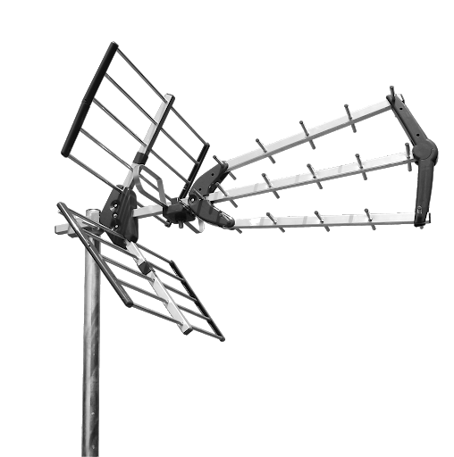

Sistemul GSM este un sistem numit „celular”. Deoarece telefoanele portabile atașabile la GSM (așa-numitele telefoane mobile sau celulare) trebuie să fie ușoare și trebuie deci și să aibă acumulatori cât mai ușori, ele au și o putere de emisie radio limitată la circa 4 – 6 km. Drept consecință, releele GSM, numite și „stații de bază”, care au antenele în poziții fixe pe stâlpi la sol sau pe clădiri mai înalte, trebuie să fie numeroase, împânzind astfel mari suprafețe, de ordinul unor întregi zone metropolitane și chiar și mai mari, tinzând cu timpul spre acoperirea completă a țărilor.
Zonele globului în care în general rețeaua GSM nu pătrunde sunt:
● mari zone nelocuite, de ex.: deșerturi, munți înalți, zonele polare, lacuri mari, mări și oceane
● zonele subterane (tuneluri, mine, stațiuni de cercetări situate la adâncime) precum și zonele subacvatice și submarine
● spațiul aerian cu altitudine de peste 4 – 6 km (avioanele de pasageri ajung și la înălțimi de 10 – 11 km)
● unele zone și țări subdezvoltate
Fiecare releu GSM deservește doar o mică suprafață, mai mult sau mai puțin rotundă și cu diametrul de cca 8 – 10 km, numită „celulă”. Dacă posesorul telefonului mobil se deplasează (de ex. călătorește cu mașina), sistemul îl „pasează” de la un releu la altul, urmărindu-l peste tot unde se află. Dacă la trecerea în altă celulă (teritorială) posesorul tocmai vorbește la telefon, convorbirea sa nu este întreruptă și nici măcar deranjată.
